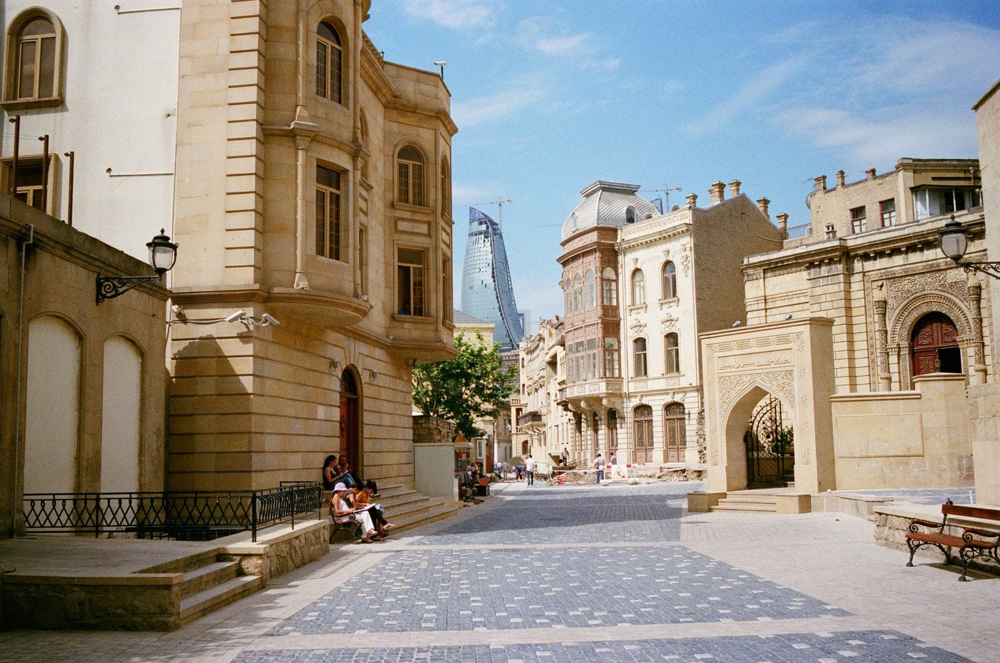
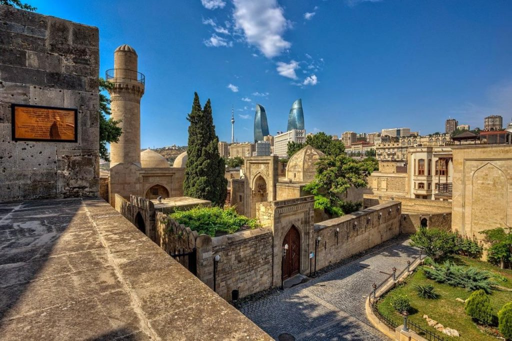
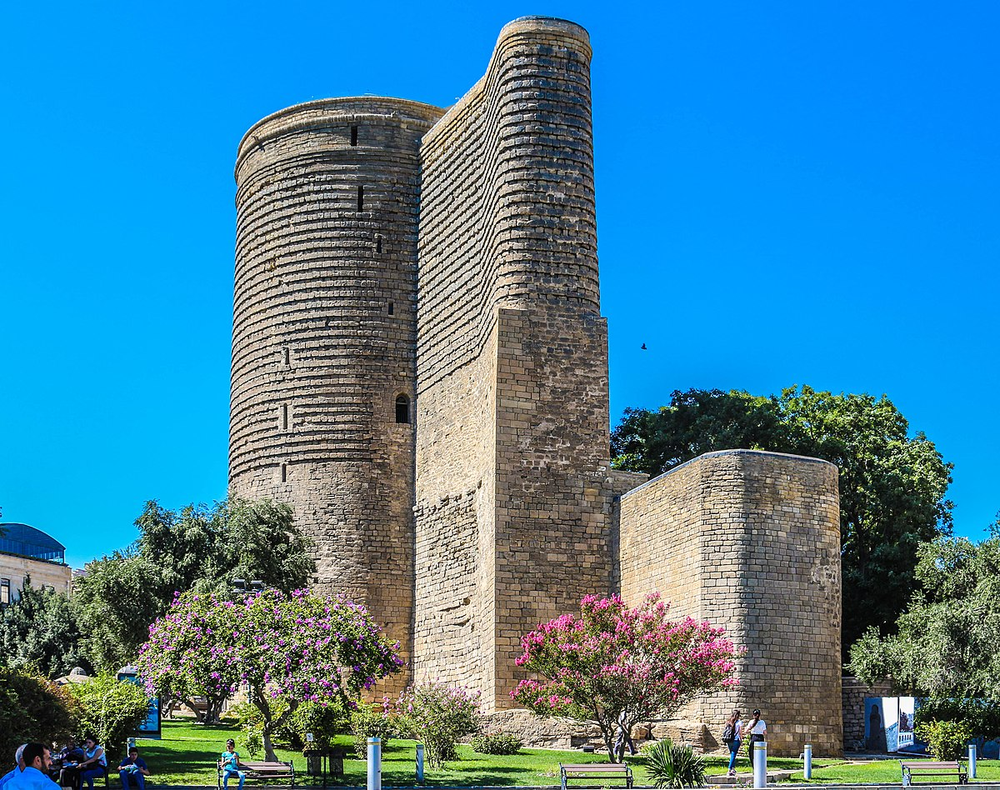
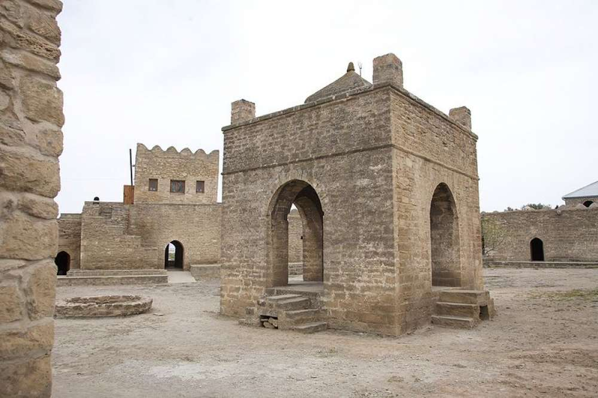
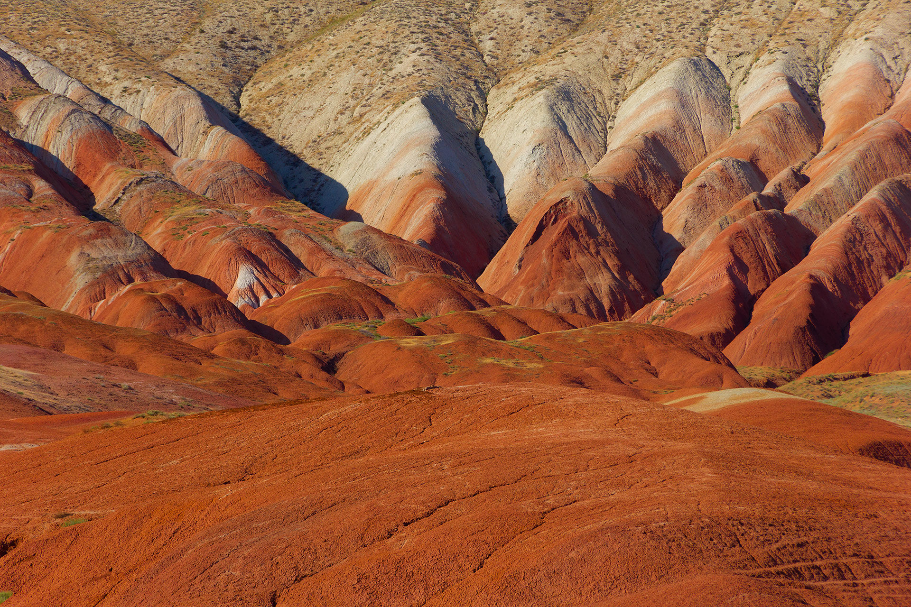

"İçərişəhər", xalq arasında həm də "Qala" və ya sadəcə "Qədim şəhər" kimi tanınan tarixi məhəllə Bakının ən qədim hissəsi həmçinin tarixi-memarlıq qoruğudur. Bakının ən qədim hissəsi olan İçərişəhər, yaxşı qorunmuş qala divarları ilə əhatə olunub. 221 000 m² sahəyə malik olan qoruq ərazisində 1300-dən çox ailə yaşayır.İçərişəhərdə yerləşən məşhur memarlıq abidələri Qız qalası və Şirvanşah Azərbaycan memarlığının inciləri hesab edilirlər.Bunlardan başqa qoruq ərazisində onlarla tarixi-memarlıq abidələri – məscidlər, karvansaralar, hamamlar, yaşayış evləri – yerləşir, bir neçə muzey, səfirlik, otel, ticarət obyektləri, kafe və restoranlar fəaliyyət göstərir.

XV əsrin əvvəllərində tikilən Şirvanşahlar sarayı bir müddət şirvanşahların iqamətgahı olmuşdur. Saray kompleksi bir neçə binadan ibarətdir. Kompleksə saray binasından başqa şərti olaraq divanxana, Şirvanşahların türbəsi, şah məscidi, ovdan, hamam, Seyid Yəhya Baküvinin türbəsi hesab edilən tikinli və şərq darvazası daxildir. Kompleksin ən maraqlı və gözəl binası sarayla yanaşı tikilmiş divanxana adı ilə tanınan abidədir.

Qız Qalası — Bakıda yerləşən memarlıq abidəsidir. Qala qədim qala divarlarının cənub-şərq hissəsində, dənizkənarı parkın (bulvar) yaxınlığında yerləşən müdafiə məqsədli tarixi abidədir. Uca qüllə şəkilli bu nadir abidənin açılmamış tarixi-memarlıq problemləri çoxdur. Hündürlüyü 28 m, diametri birinci mərtəbədə 16,5 m-dir. Birinci mərtəbədə divarın qalınlığı 5 m-ə çatır. Qalanın daxili hissəsi 8 mərtəbəyə bölünür. Hər mərtəbə yonma daşlarla tikilmiş, günbəz formalı tavanla örtülmüşdür. Daşdan hörülmüş bu tavanların ortasında dairəvi deşiklər vardır. Deşiklər şaquli xətt istiqamətindədir. Belə ki, VIII mərtəbənin tavanının ortasında olan dairəvi deşikdən baxdıqda birinci mərtəbənin döşəməsini görmək mümkündür. Qalaya yeganə giriş yolu onun qərb tərəfində, yerin əvvəlki səthindən 2 m hündürlükdə və 1,1 m enində olan tağlı qapı yeridir.

Atəşgah — Azərbaycan ərazisindəki Abşeron yarımadasında, Bakı şəhərindən 30 km aralıda, Suraxanı rayonundakı Suraxanı kəndi yaxınlığında yerləşən, müxtəlif dövrlərdə zərdüştilər, hinduistlər və siqhlər tərəfindən ibadətgah kimi istifadə edilmiş alov məbədidir.XVII–XVIII əsrlərdə təbii qaz çıxışı olan sönməz alovların yerində inşa edilmiş məbədin adı "Alov evi" və ya "Alov yeri" anlamı verir. Memarlıq kompleksi planda beşguşəli çıxıntılı və iri giriş yerinə malik müdafiə divarları və ərazinin mərkəzində yerləşən dördguşəli altar – alov məbədindən ibarətdir. Giriş üzərində Şirvan-Abşeron memarlıq məktəbi üçün xarakterik olan qonaq otaqları – balaxana inşa edilmişdir.

Azərbaycanın ən mənzərəli yollarından biri Bakı - Quba yolunun 40-cı kilometrindən Altıağaca doğru gedir. Bu yolla gedərkən qırmızı, narıncı, tünd qəhvəyi və çəhrayı rənglərə boyanmış çox da hündür olmayan, amma gözəlliyi ilə göz oxşayan çox sayda dağlar görəcəksiniz. Məhz bu dağlar Azərbaycanda çox məşhur olan Xızı dağlarıdır. Bu məftunedici rənglərin yaranmasının səbəbi qrunt sularının təsiri ilə qayaların tərkibindəki dəmirin oksidləşməsidir. Bakıda turizm şirkətləri tərəfindən payız və yaz aylarında təşkil edilən haykinq turlara qoşulub bu yerləri gəzməyə çıxın. Ayaqlarınızın altına diqqətlə nəzər salın: burada tabaşir dövrünə aid kiçik qalıqlara və bəlkə də, molyusklara bənzər belemnitlərə rast gələcəksiniz. Bu dağları həm də "şəkər dağları" da adlandırırlar. Eyni tipli dağlara Peru və Çində də rast gəlmək olar.